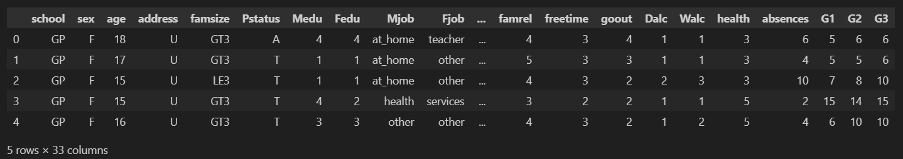
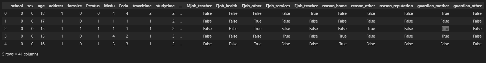

Support Vector Machine (SVM)
Finding the optimal hyperplane to separate student performance classes with maximum margin.
Overview
A Support Vector Machine (SVM) is a supervised learning algorithm that finds the optimal decision boundary — called a hyperplane — that separates classes with the largest possible margin of separation. The data points closest to the boundary on either side are called support vectors, and the model is entirely defined by these critical points. In high-dimensional feature spaces, SVMs are particularly powerful because the margin maximization objective provides strong generalization ability even when the number of features is large relative to the number of training examples. For non-linearly separable data, SVMs employ a kernel function — such as the Radial Basis Function (RBF) kernel — to implicitly transform the feature space into a higher-dimensional representation where a linear boundary becomes sufficient. The regularization parameter C controls the trade-off between maximizing the margin and minimizing training error, while the kernel coefficient gamma determines how far the influence of a single training example reaches.
For multi-class classification of student performance (Low, Medium, High), SVM uses a One-vs-Rest (OvR) strategy: three separate binary classifiers are trained, each distinguishing one class from the other two. The class with the highest decision function score is assigned as the final label. Because SVM is sensitive to feature scale, all numeric features are normalized using StandardScaler before training. SVMs generally produce higher accuracy than simpler models on complex datasets and are especially valuable when discovering sharp, nonlinear boundaries between performance groups. The model is less interpretable than a Decision Tree, but its accuracy and robustness to overfitting make it a strong contender for the best-performing classifier in this project.
Key Hyperparameters: C (regularization strength — larger C = less margin, fewer misclassifications on training set), kernel (RBF, linear, polynomial), gamma (RBF width — smaller gamma = smoother boundary). GridSearchCV is used to find the optimal combination via cross-validation.
Data
SVM requires fully numeric features and is sensitive to scale. The cleaned, encoded dataset is normalized with StandardScaler before training. The target is the three-class performance label. G1 and G2 are dropped to avoid leakage.


Code
Implemented in Python 3. Core packages: sklearn (SVC, StandardScaler, GridSearchCV, classification_report, confusion_matrix, cross_val_score), pandas, matplotlib, seaborn.
Code for this analysis will be linked here once the SVM script is complete.
Results
In Progress: SVM training with hyperparameter tuning (GridSearchCV across C and gamma) is being finalized. Results including accuracy, confusion matrix, and decision boundary analysis will be published here.
Expected outputs include:
- Best hyperparameter combination found via GridSearchCV (C, kernel, gamma)
- Test set accuracy on the optimal model
- Classification report: precision, recall, F1-score per class
- Confusion matrix across Low / Medium / High performance groups
- Cross-validation accuracy distribution (boxplot across 5 folds)
- Comparison of RBF vs. linear kernel performance
- Discussion of which student features SVM found most separating